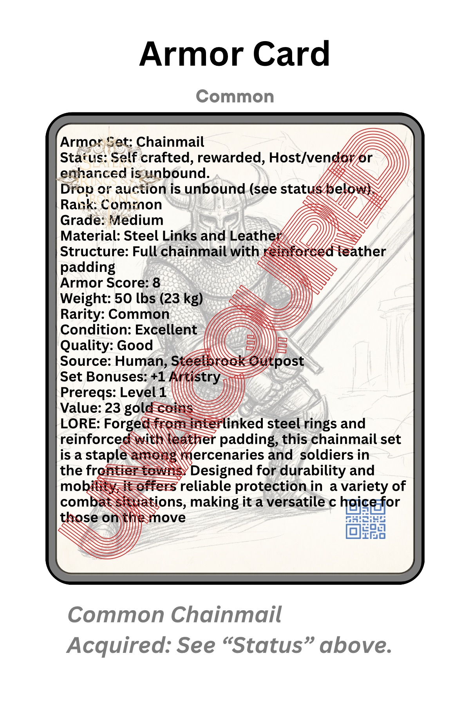
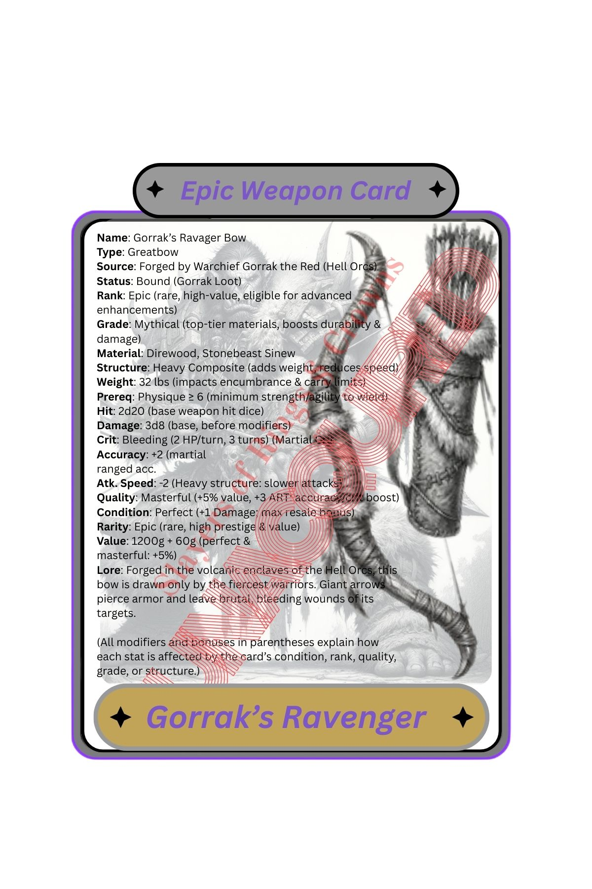
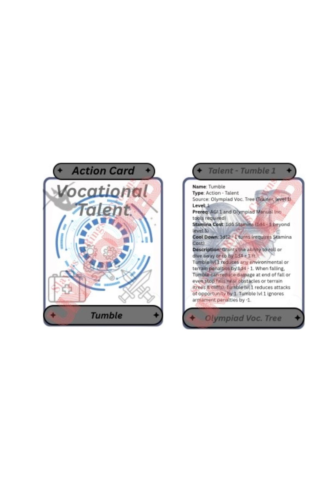
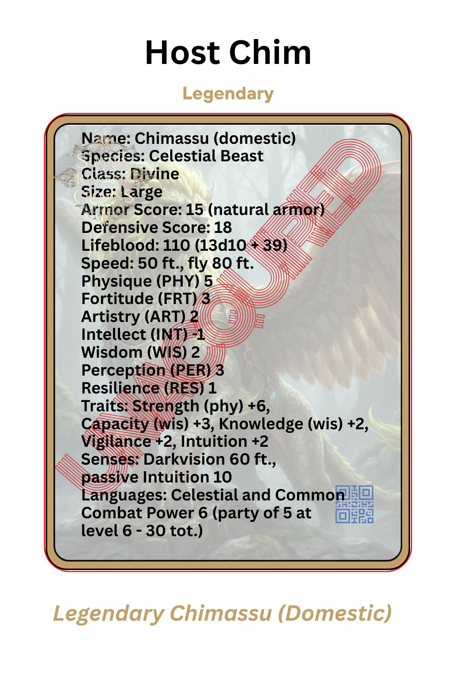
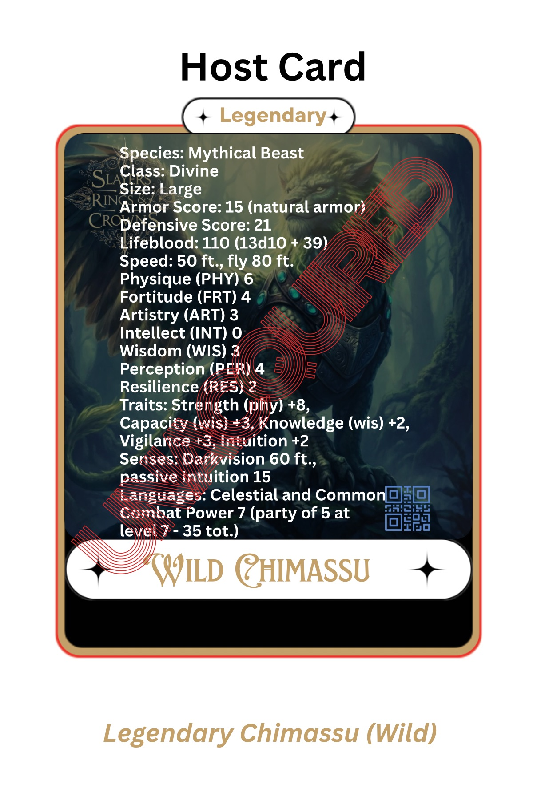
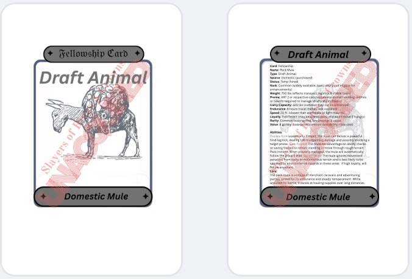

SorC Cards Overview
In SorC, players use a comprehensive card-based system to track their abilities, equipment, and companions, with cards representing everything from weapons and armor to pets and fellowship members. Each card has its original base stats, conditions and rarity, and is paired with a detailed index card for noting modifications, buffs, curses, and special traits, allowing characters to customize and adapt their gear and allies over time. SorC emphasizes active exploration and discovery, as players seek out new cards and forge relationships with guardians, mounts, and other creatures. The GM manages the distribution of card sets, item states, and modifications, creating a dynamic and evolving gameplay environment where equipment and alliances can change based on player choices and in-game events.
Characters cannot acquire a card higher than their own rank – commoner equals common rarity, and so forth. SorC’s starter set comes with a deck of base common cards, including armor, weapons, fellowships, items, and their respective index cards to record edited data, such as enhancements and physical modifications.
For more on SorC Cards, refer to section .01x.
GMs are provided with box sets of cards at three-level intervals, and these sets include every available card. However, players must still go through the process of acquiring these cards themselves. For example, even though all players have the ability to attempt taming a guardian, classes such as rangers and beast masters receive bonuses – not only in discovering guardians but also in calming, coercing, taming, and befriending them. Refer to the Fellowship section for more details.
Cards and Index-Cards
Each card has its base abilities, stats, and so forth. Additionally, each card comes with an index-card, a standard index card where players note special details, enhancements, and modifications, including temporary buffs and curses. Cards and index-cards serve as the primary means for characters to record their abilities.
The Enhanced Stats Card functions as the comprehensive, real-time record of an item's or character's current capabilities after all modifications and upgrades. It consolidates the base card's original stats with all attached upgrade or modification index cards, providing an at-a-glance view of the current effective stats. Whenever a character upgrades or modifies an item, the relevant index card is updated, and the Enhanced Stats Card reflects these changes by displaying the total combined stats—such as defense, attack, resistances, or special properties—ensuring players and GMs can easily track the evolving power of gear and allies over time.
Index-cards are physical cards where players add notes and modifications to a card’s base stats. As these modifications change – such as temporary buffs, curses, or enhancements – the player updates the information on the index card. Players can go through as many index cards as they like during their adventures, provided the text remains legible to the GM.
Characters will acquire many types of items through various methods — whether looted, discovered, or crafted. These items may wear down and lose some of their stats and value over time. Until repaired, they can be used, traded, or sold to NPCs in SorC. The GM is responsible for tracking all items, along with their corresponding index cards. Items remain in SorC world as cards unless destroyed, and their stats may fluctuate over time at the GM’s discretion.
Example:
A +1 Ogre’s base sword card, with an index card granting it +2 fire damage, is sold to a merchant in Alvon. The card is sold with the index card attached, giving it a total of +3 damage (1 base + 2 fire). At the GM’s discretion, this index card may be modified – raising its stats and value over time. The item could even be hidden or sold to another vendor, in another location, or on another planet. All of this depends on the GM’s decisions – they can leave the item as originally sold, alter its stats and history, or have it destroyed entirely. If it’s not destroyed, it remains in SorC; if it is destroyed, its materials stay in SorC world.
Players may own several cards but must choose which ones they want to begin their adventures with. However, through various methods of fast travel, such as teleportation, characters can access other cards—whether from their own storage or from a vendor—as long as they meet the cards’ proficiency and have capacity to carry them when it applies.
Card Types
- Character Card: iD #, Photo or symbol, Name, Race, Class, Background, etc.
- Stat Cards: Attributes, Survivor Traits
- Ability Cards: Combat Abilities, Spell Cards, Nature Drawn Abilities, Spell Drawn Abilities, Miracles, Talents, Skills
- Consolidation Card: The Consolidation Card (Con Card) is an index card with all of one area's stats added together. As character stats change, the Con Card changes, including temporary buffs and debuffs. This card is often handed to the GM upon their discretion to view the allocated stats of characters.
Armor Cards
Armor Cards in SorC represent individual pieces or full sets of armor worn by characters, displaying base stats such as Armor Score (AS), movement penalty, type, rarity, quality, and condition. The physical card features artwork and essential details, while a paired index card is used to track any upgrades, magical enhancements, temporary buffs, or physical modifications made to the armor over time. Set bonuses, resistances, and special traits (like stealth or magical absorption) are also noted on these cards, allowing players and GMs to quickly reference a character’s current defenses.

Armor’s rarity and condition determine both its effectiveness and eligibility for upgrades or enchantments, with only certain ranks and qualities able to be improved. Players may own multiple armor cards but can only equip what their rank and carrying capacity allow, while the GM manages the acquisition, repair, and state of each card. Any changes – such as wear, upgrades, or replacement of set pieces – are always recorded on the index card, ensuring everyone can easily track a character’s protection and bonuses throughout their adventures.
Weapon Cards
Weapon Cards are used to track the full range of armaments available to characters, with each card showing a weapon’s base attack and damage dice, speed, type, rarity, and any special effects. The front of the card displays the weapon’s image and key details, while the attached index card is updated with enhancements, enchantments, socketed gems or runes, curses, and temporary buffs. This lets players and GMs keep a real-time record of each weapon’s effective stats and abilities, including critical hit bonuses, elemental effects, and unique properties.

Weapon cards are limited by character rank and proficiency, and can be acquired through crafting, loot, quests, or purchase. Only equipped weapons contribute to combat, and modifications or changes – such as upgrades, enchantments, or status effects – are always tracked on the index card. The GM oversees the distribution and management of weapon cards, ensuring the history, upgrades, and current condition of each weapon is clear and consistent for every player.
Action Cards
Action Cards represent a character’s abilities and talents, split into distinct categories: Ability Cards for combat maneuvers (martial, caster, spell-drawn, nature-drawn, specials, and miracles), Talent Cards for non-combat skills, and Host Cards for tracking stats and abilities of NPCs and monsters. Each card displays the base effect, prerequisites, and any custom enhancements, while attached index cards note upgrades, buffs, or temporary effects gained during play. This modular system lets players and GMs quickly reference a character’s available actions and special moves, as well as track growth or changes to their repertoire.

Players choose and manage their Action Cards according to class, rank, and experience, with rarer or more advanced cards unlocked as the character progresses. Only equipped abilities and talents count in encounters, and all changes – such as new upgrades or situational effects – are recorded on the relevant index card. Host Cards are managed by the GM, ensuring all NPCs and monsters have clear stats and abilities during interactions and combat.
Trait Cards
Trait Cards track a character’s twelve core traits, each representing a specific form of defensive resilience or offensive advantage – such as strength, agility, courage, resistance, willpower, and luck. Each card details how the trait is used to resist effects or boost attacks, and is aligned with one of the character’s core attributes. When traits are used in play, players roll the relevant die, add bonuses, and compare the total to a DC to determine success or failure; results are recorded on the index card for ongoing effects or development.
Traits directly influence talents and abilities, so improving a trait card enhances related skills and combat effectiveness. Players may specialize and develop traits over time, unlocking new bonuses or resistances. The system is designed to keep trait use clear and strategic: all trait rolls, enhancements, and changes are tracked on the card and index card, giving both players and GMs a straightforward reference for character capabilities in every challenge or encounter.
Host Cards
Host Cards function as character sheets for all non-player entities in SorC, including monsters, NPCs, and environmental threats. Each Host Card contains essential information such as base stats (health, attack, defense, abilities), rarity, unique traits, and any special actions or behaviors. The front of the card typically features an image or symbol of the host, while the reverse provides a clear, organized breakdown of its combat and interaction stats, resistances, weaknesses, and any innate effects.
For dynamic encounters, the GM uses attached index cards to track ongoing changes – like injuries, buffs, debuffs, or temporary abilities – ensuring each host’s current state is up to date. Host Cards streamline gameplay by allowing the GM to quickly reference and manage all essential details of NPCs and monsters, providing consistency in combat and narrative scenes while supporting modifications and evolving conditions throughout the adventure.
Fellowship Cards
Fellowship Cards represent the allies, companions, pets, mounts, and guardians that accompany a character throughout their journey in SorC. Each card details a fellowship member’s base attributes – such as health, abilities, skills, rarity, and any special traits like magical powers or loyalty bonuses. Alongside each card is an index card where players and the GM track modifications, temporary buffs, evolving relationships, equipment, and status effects. This system allows fellowships to grow, change, and be customized as adventures unfold.

Players can collect and manage multiple fellowship cards, but only active companions count toward their current party and available bonuses. Fellowship cards may be acquired by taming, recruiting, questing, or purchasing, and follow the same rarity and rank restrictions as other card types. As with weapons and armor, upgrades, enhancements, training, and temporary effects are always recorded on the index card, ensuring a clear and up-to-date record of each companion’s capabilities and growth.

View Wild Chimassu Card Demo
